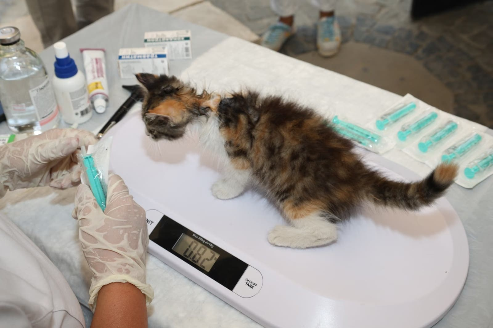

Aşı ve sağlık kontrolleri, kısırlaştırma ve cerrahi. Yeni sahiplenenlerin bütün sorularına zaman ayıran bir ekip.
Muayeneden cerrahiye kadar temel ihtiyaçları kliniğimizde karşılıyoruz.
Yavruluktan itibaren aşı takvimi, düzenli kontroller ve parazit uygulamaları.
Kedi ve köpeklerde kısırlaştırma ameliyatı ve gerekli cerrahi müdahaleler.
Beslenme, bakım ve davranış soruları için sabırla danışmanlık.
"Osman hoca ve Ecem hoca, minik lionumuza çok iyi baktı. Kedimiz 4. kattan atlamıştı. Ve ağır travması vardı…"
"Kedi Daisy'mi 4 aylıktan bu yana aşılar ve sağlık kontrolü için götürüyorum. … Her zaman ilgililer, dostane ve profesyonel yaklaşımları için tüm ekibe teşekkür ederim."

Cennet Mah., Alparslan Cd. No:47/A
34290 Küçükçekmece / İstanbul
0507 031 06 80